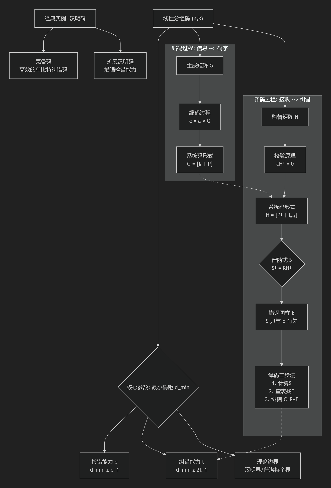

🌟 欢迎来到第7讲：线性分组码——结构之美与纠错之力 #
(对应教材《数字通信原理》第八章 8.5 节)
大家好！上一讲我们知道了，一个好的差错控制码，其许用码字集的"排布"至关重要。如果码字是随机选的，分析和实现起来将是一场噩梦。而线性分组码的伟大之处，就在于它用线性代数的"秩序"彻底解决了这个问题。
在本讲，我们将学习线性分组码的两大神器：用于编码的生成矩阵 G 和用于译码的监督矩阵 H。你将看到，复杂的编码过程可以简化为一个优雅的矩阵乘法 c = aG；而神奇的纠错过程，则源于一个被称为 “伴随式” 的错误"指纹" S = HR^T。我们将通过一个贯穿始终的(7,4)汉明码实例，从零开始构建它的G和H矩阵，并手把手地带你完成一次完整的纠错过程，让你彻底明白其中的奥秘。
学习目标：
- 掌握衡量码能力的核心指标——最小码距 d_min，并理解其与检错/纠错能力的关系。
- 学会使用生成矩阵 G 将信息码组编码为码字。
- 学会使用监督矩阵 H 和伴随式 S 来检测和定位错误。
- 完整掌握一个线性分组码（如(7,4)汉明码）的分析、设计与译码全流程。
- 了解汉明码这一类"完美"编码的设计思想和能力。
📚 本讲知识地图 #

📝 本讲主要内容 #
1. 码的灵魂：码距 (Hamming Distance) #
要衡量一个码的优劣，最关键的参数就是最小码距。
1.1. 码距的定义 #
- 汉明距离 D(w₁, w₂) (PPT p4)：两个等长码字
w₁和w₂之间，对应位置上码元不同的个数。- ✨ 生动的比喻：把码字看作单词，汉明距离就是将一个单词变为另一个需要改动几个字母。例如
D("CAT", "BAT") = 1，D("1011", "1101") = 2。 - 数学公式：$D(w\_1, w\_2) = \sum\_{i=0}^{n-1} (b\_i \oplus c\_i)$，其中
w₁ = (b...),w₂ = (c...)。
- ✨ 生动的比喻：把码字看作单词，汉明距离就是将一个单词变为另一个需要改动几个字母。例如
- 最小码距 d_min (PPT p6)：在一个码的所有许用码字中，任意两个不同码字之间汉明距离的最小值。
$$
d_{min} = \min_{i \neq j} D(w_i, w_j)
$$
d_min决定了一个码的差错控制能力的上限。d_min越大，码字在空间中分得越"开"，抗干扰能力越强。
1.2. 码距与检错/纠错能力的关系 (PPT p6-7) #
- ✨ 生动的比喻：安全距离的岛屿
- 许用码字：一座座安全的岛屿。
- 禁用码字：岛屿周围的汪洋大海。
- d_min：任意两座岛屿之间最短的航行距离。
- 错误：一阵风暴，把你从岛屿上吹离了一段距离。
- 检错能力 (e)：要能检测出最多
e个错误。- 条件: $d\_{min} \ge e+1$
- 解释：风暴最多把你吹离
e的距离。只要岛屿间的最小距离d_min大于e，你就绝不会被直接吹到另一座岛屿上，最多落在海里。只要你发现自己在海里（收到了禁用码字），你就知道出错了。
- 纠错能力 (t)：要能纠正最多
t个错误。- 条件: $d\_{min} \ge 2t+1$
- 解释：风暴最多把你吹离
t的距离。为了能安全返航，我们必须保证你所处的位置，离你出发的那个岛屿是最近的。这就要求，以每座岛屿为中心，半径为t的"安全区"（圆形区域）不能有任何重叠。两个安全区不重叠，意味着圆心距d_min必须大于两个半径之和t+t。
| 能力要求 | 最小码距条件 | 示例 (d_min=3) |
|---|---|---|
| 检测 e 位错误 | $d\_{min} \ge e+1$ | $3 \ge e+1 \Rightarrow e=2$ (可检测2位及1位错) |
| 纠正 t 位错误 | $d\_{min} \ge 2t+1$ | $3 \ge 2t+1 \Rightarrow t=1$ (可纠正1位错) |
| 同时检e纠t (e>t) | $d\_{min} \ge e+t+1$ | - |
1.3. 线性码的捷径：最小码重 #
- 码重 W(w)：一个码字中"1"的个数。
- 定理 (PPT p23)：对于任何线性分组码，其最小码距等于其非零码字的最小码重。 $$ d_{min} = \min_{w_k \in C, w_k \neq 0} W(w_k) = w_{min} $$
- 意义：这是一个巨大的简化！我们不再需要计算 $C\_{2^k}^2$ 对码字的两两距离，只需计算 $2^k-1$ 个非零码字的码重即可。
2. 编码的工厂：生成矩阵 G #
2.1. 编码过程 #
对于线性码，任何一个码字都可以由 k 个线性无关的"基码字"线性组合而成。我们将这 k 个基码字作为行，构成一个 k x n 的矩阵，这就是生成矩阵 G。
* 编码公式 (PPT p8-9)：
$$
\underset{1 \times n}{\mathbf{c}} = \underset{1 \times k}{\mathbf{a}} \cdot \underset{k \times n}{\mathbf{G}}
$$
其中 a 是信息码组（行向量），c 是生成的码字（行向量）。
2.2. 系统码 (Systematic Code) #
为了方便，我们通常使用系统码，其生成矩阵具有标准形式：
$$
G = [I_k | P]
$$
* $I\_k$: $k \times k$ 的单位矩阵。
* $P$: $k \times (n-k)$ 的矩阵，称为校验关系矩阵。
* 编码结果: $c = aG = a[I\_k | P] = [aI\_k | aP] = [a | p]$
* 生成的码字 c 的前 k 位就是信息位 a 本身。
* 后 n-k 位是根据信息位计算出的监督位 p = aP。
3. 译码的神探：监督矩阵 H 与伴随式 S #
3.1. 监督（校验）矩阵 H #
H 是一个 $(n-k) \times n$ 的矩阵，它的作用是"检验"一个码字是否合法。
* 校验条件：一个码字 c 是许用码字，当且仅当：
$$
\mathbf{c} \mathbf{H}^T = \mathbf{0}
$$
* 与 G 的关系：对于系统码 $G = [I\_k | P]$，其监督矩阵为：
$$
H = [P^T | I_{n-k}]
$$
可以验证 $GH^T = [I\_k | P] \begin{bmatrix} P \\\ I\_{n-k} \end{bmatrix} = P+P = 0$。（在GF(2)中，A+A=0）
3.2. 错误图样 E 和 伴随式 S #
- 接收码字 R：$R = C + E$，其中 C 是发送的许用码字，E 是传输中产生的错误图样（
1代表该位出错）。 - 伴随式 (Syndrome) S (PPT p16)： $$ \mathbf{S}^T = \mathbf{R} \mathbf{H}^T $$ 我们来推导一下： $S^T = (C+E)H^T = CH^T + EH^T$ 因为 C 是许用码字，所以 $CH^T = 0$。于是： $$ \mathbf{S}^T = \mathbf{E} \mathbf{H}^T $$
- ✨ 核心洞察：伴随式 S 只与错误图样 E 有关，而与发送的码字 C 无关！S 就是 E 的"指纹"或"症状"。
3.3. 译码全流程 (PPT p30) #
- 计算伴随式：收到码字 R 后，计算 $S^T = RH^T$。
- 定位错误：
- 若 $S=0$，则认为无错误发生，译码结果就是 R 的前 k 位。
- 若 $S \neq 0$，则说明有错误。通过预先计算好的 “伴随式-错误图样” 对应表，找到 S 对应的最可能的错误图样 E。
- 纠正错误：计算出正确的码字 $C = R + E$。（在GF(2)中，加减等价）。
4. 【深度例题剖析】一个(6,3)码的完整生命周期 (PPT p24-28) #
这是您上课没听懂的重点，我们一步步来。
-
问题: 已知一个(6,3)线性分组码的生成矩阵 $G = \begin{bmatrix} 1 & 0 & 0 & 1 & 1 & 0 \\\ 0 & 1 & 0 & 1 & 0 & 1 \\\ 0 & 0 & 1 & 0 & 1 & 1 \end{bmatrix}$，分析其能力并完成一次纠错。
-
步骤1：分析码的能力
- 列出所有码字：信息位有 $2^3=8$ 种，从
000到111。a=000->c = 000G = 000000(W=0)a=001->c = 001G = 001011(W=3)a=010->c = 010G = 010101(W=3)a=011->c = (010+001)G = 011110(W=4)- … 以此类推，得到所有8个码字。
- 求最小码距：观察所有非零码字的码重，发现最小码重 $w\_{min}=3$。所以 $d\_{min}=3$。
- 判断能力：
- 检错：$d\_{min} \ge e+1 \Rightarrow 3 \ge e+1 \Rightarrow e=2$。能检测2位及以内错误。
- 纠错：$d\_{min} \ge 2t+1 \Rightarrow 3 \ge 2t+1 \Rightarrow t=1$。能纠正1位错误。
- 列出所有码字：信息位有 $2^3=8$ 种，从
-
步骤2：求监督矩阵 H
- 观察 G，它是系统码 $G=[I\_3|P]$ 的形式。其中 $P = \begin{bmatrix} 1 & 1 & 0 \\\ 1 & 0 & 1 \\\ 0 & 1 & 1 \end{bmatrix}$。
- 根据公式 $H = [P^T|I\_3]$，得到： $P^T = \begin{bmatrix} 1 & 1 & 0 \\\ 1 & 0 & 1 \\\ 0 & 1 & 1 \end{bmatrix}$ (此例中P恰好是对称阵) $H = \begin{bmatrix} 1 & 1 & 0 & 1 & 0 & 0 \\\ 1 & 0 & 1 & 0 & 1 & 0 \\\ 0 & 1 & 1 & 0 & 0 & 1 \end{bmatrix}$
-
步骤3：建立"伴随式-错误图样"查找表
- 这是译码的关键准备。我们假设最可能发生的是1位错误。
- E₁= -> S₁ᵀ=E₁Hᵀ=
- E₂= -> S₂ᵀ=E₂Hᵀ=
- E₃= -> S₃ᵀ=E₃Hᵀ=
- E₄= -> S₄ᵀ=E₄Hᵀ=
- E₅= -> S₅ᵀ=E₅Hᵀ=
- E₆= -> S₆ᵀ=E₆Hᵀ=
- E₀= -> S₀ᵀ=E₀Hᵀ= (无错误)
-
步骤4：纠错实战 (a) - 出现1位错误
- 假设收到码字
r = [0 0 1 1 1 0]。 - 计算伴随式 S： $S^T = rH^T = \begin{bmatrix} 1 & 1 & 0 \\\ 1 & 0 & 1 \\\ 0 & 1 & 1 \\\ 1 & 0 & 0 \\\ 0 & 1 & 0 \\\ 0 & 0 & 1 \end{bmatrix} = [1 \ 0 \ 1]$
- 查表：伴随式
[101]对应错误图样E₅ = [010000]。 - 纠错：$C = r+E = + =$。
- 验证：查步骤1的码字表，
[011110]是一个合法的许用码字，纠错成功！
- 假设收到码字
-
步骤5：纠错实战 (b) - 出现2位错误
- 假设发送
C=[011110]，发生了2位错误，收到r = [000110]。 - 计算伴随式 S： $S^T = rH^T = \begin{bmatrix} 1 & 1 & 0 \\\ 1 & 0 & 1 \\\ ... \end{bmatrix} = [1 \ 1 \ 0]$
- 查表：伴随式
[110]对应错误图样E₆ = [100000]。 - “纠错"操作：$C' = r+E = + =$。
- 分析：得到的结果
[100110]虽然是一个合法的许用码字，但它并不是我们当初发送的[011110]。译码出错了！ - 原因：这个码的纠错能力
t=1。当出现2位错误时，它已经超出了能力范围。这个2位错误的"症状”（伴随式），恰好和某个1位错误的"症状"一样，导致了"误诊"。
- 假设发送
5. 汉明码：一类完美的单比特纠错码 (PPT p33) #
汉明码是一类非常重要的线性分组码，它的设计思想是将伴随式的功能发挥到极致。
* 参数：码长 $n=2^r-1$, 信息位 $k=n-r$, 监督位 $r=n-k$。
* 设计思想：
* 共有 $2^r-1$ 个非零的伴随式。
* 共有 $n = 2^r-1$ 种单比特错误。
* 让每一个非零伴随式 唯一对应 一种单比特错误。
* 能力：$d\_{min}=3$，是完美的单比特纠错码 (t=1)。
* 扩展汉明码：在汉明码基础上增加1位总的偶校验位，码长变为 $n'=n+1$，信息位不变。$d\_{min}$ 从3提升到4。能力变为：纠正1位错误，同时检测2位错误。
🔗 知识关联与应用 #
- 承上启下：线性分组码将上一讲的代数理论（特别是线性子空间）赋予了生命。我们今天学习的生成矩阵G和监督矩阵H是所有线性码（包括后续的循环码）分析的基础。
- 现实应用：
- 内存 ECC: 服务器内存条中的ECC功能，就是用(72,64)的汉明码或其变种实现的，它能自动纠正单位内存颗粒失效导致的单比特错误。
- RAID 磁盘阵列: RAID 2 使用了汉明码的思想，虽然现在已不常用，但RAID 5/6中的奇偶校验盘，其原理与监督矩阵的校验思想一脉相承。
🤔 引导式提问 #
- 为什么线性码的最小码距等于最小码重？这个性质的背后，利用了线性码码字集的什么代数特性？ (提示：封闭性。两个码字之和/差仍是码字)。
- 在我们的(6,3)码例子中，当出现2位错误时，译码失败了。如果我们想设计一个能纠正2位错误的码，它的最小码距
d_min至少应该是多少？这意味着相比(6,3)码，我们需要付出什么代价？ - 汉明码被称为"完备码"，它的伴随式和单比特错误一一对应，没有任何"浪费"。这种"完美"的设计，也带来了一个弱点，是什么？（提示：思考它如何处理两位错误）。扩展汉明码是如何弥补这个弱点的？
💡 本讲总结 #
今天我们深入了线性分组码的"五脏六腑"。核心收获是掌握了 “一个参数，两大矩阵，一套流程”。
- 一个参数：最小码距 d_min，它决定了码的生死（检错和纠错能力）。
- 两大矩阵：优雅的生成矩阵 G 用于编码，强大的监督矩阵 H 用于校验。它们之间通过
P矩阵紧密关联，构成了线性码的骨架。 - 一套流程：基于 H 计算接收向量 R 的伴随式 S，通过 S 这个"错误指纹"查找到错误图样 E，最终通过
C = R + E完成纠错。 通过对(6,3)码的完整剖析，我们走通了从理论分析到动手纠错的全过程，深刻理解了线性码是如何系统、高效地对抗信道错误的。